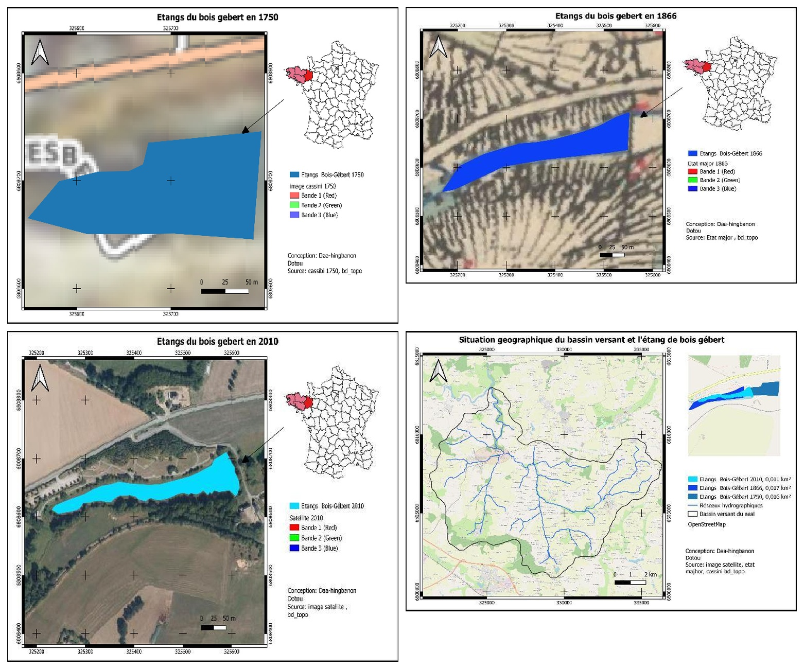
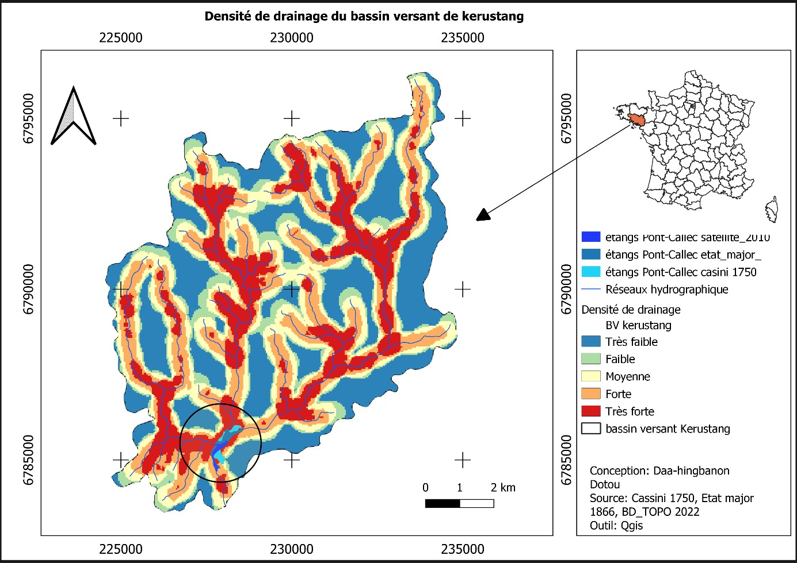

Géomatique, Limnologie, Environnement et Territoire · Université d'Orléans · 2022-2023 · SIG et géohistoire des lacs et zones humides
Restauration de la continuité écologique de deux bassins versants
Analyse comparative pour l'allocation de budgets de restauration (Bretagne)
Contexte et objectif
La restauration de la continuité écologique des cours d'eau — c'est-à-dire la libre circulation des espèces et des sédiments, entravée par des ouvrages hydrauliques (barrages, seuils, digues) — est devenue une priorité réglementaire en France. Ce travail compare deux bassins versants bretons, celui de l'étang du Pont de Callec (bassin de Kérustang, sur le Scorff) et celui de l'étang du Bois Gébert (bassin du Néal), afin d'objectiver quel bassin doit être prioritairement ciblé par des budgets de restauration, à partir d'une analyse géohistorique de l'évolution des étangs et d'indicateurs hydrologiques.
Démarche et outils
Trois sources cartographiques ont été géoréférencées puis numérisées sous QGIS pour suivre l'évolution des étangs à trois dates : la carte de Cassini (1750), la carte d'état-major (1820-1866) et une image satellite récente (2010), recalées en projection Lambert-93. Pour chaque bassin, la densité de drainage (formule de Horton : longueur totale des cours d'eau rapportée à la surface du bassin versant) et la limnicité étendue (surface des plans d'eau rapportée à la surface du bassin versant) ont été calculées aux trois dates, complétées par des cartes de pente issues d'un MNT SRTM.
Résultats
Les cartographies diachroniques révèlent deux trajectoires opposées. L'étang du Pont de Callec recule fortement : 0,279 km² en 1750, 0,219 km² en 1866 (-22 %), puis 0,105 km² en 2010, soit une perte de 62 % en 260 ans ; sa limnicité étendue suit la même pente, de 0,350 % à 0,131 %. L'étang du Bois Gébert, beaucoup plus petit, reste globalement stable : 0,016 km² en 1750, une légère progression à 0,017 km² en 1866, puis un repli à 0,011 km² en 2010 (limnicité étendue de 0,0169 % à 0,0179 % puis 0,0116 %). La comparaison des deux bassins confirme des dynamiques hydrologiques bien distinctes : Kérustang, plus dense en cours d'eau (98,2 km) et à la densité de drainage plus élevée (1,231 km/km² contre 0,885 km/km² pour le Néal), entretient une interaction beaucoup plus forte avec son étang, avec une limnicité étendue près de dix fois supérieure à celle du Néal sur les trois dates. Confronté à des ouvrages hydrauliques dégradant la continuité écologique et à environ 100 000 m³ de vase polluée accumulée, le bassin de Kérustang bénéficie déjà d'un financement de 110 000 £, quand le Néal fait l'objet d'un projet distinct de 904 005 £ porté par l'Agence de l'eau Loire-Bretagne jusqu'en 2025. Au vu de son poids écologique et hydrologique nettement supérieur, l'étude recommande de prioriser l'allocation budgétaire sur le bassin de Kérustang, tout en envisageant pour le Néal, compte tenu de la faible superficie de son étang et de sa tendance à l'accumulation de polluants, une suppression plutôt qu'une restauration coûteuse.


